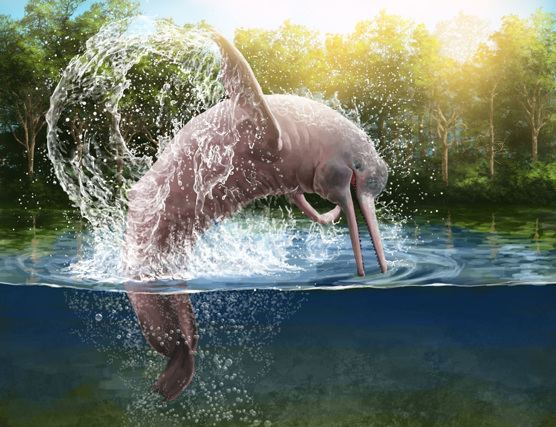

Segundo o ICMBio, instituto responsável pelo mapeamento da fauna, o Brasil possui a maior biodiversidade de animais do mundo. São mais de 120 mil espécies de invertebrados, e de aproximadamente 8.930 espécies de vertebrados.
O tamanho do Brasil e a grande variedade de climas e características e suas regiões são o que torna possível existir no país um número tão alto de espécies. Dentre os biomas brasileiros, os maiores em biodiversidade são a Amazônia, a Mata Atlântica e o Cerrado.
O boto-cor-de-rosa é um mamífero que vive na água. Ele é parente das baleias e dos golfinhos: a diferença é que ele não vive no mar, mas sim na água doce. Seu habitat são os rios amazônicos do Brasil, da Bolívia, da Venezuela, da Colômbia, do Equador e do Peru.
A cor rosa característica do boto se deve às veias que ficam bem abaixo da sua pele. Ela varia de acordo com a idade: quando nascem são cinzentos e quando crescem ficam rosados. Além disso, a cor dos machos é mais viva que a das fêmeas.
"A arara-azul, também chamada arara-azul-grande, é uma espécie de ave, encontrada no Brasil, que se caracteriza por ser a maior entre os psitacídeos (família Psittacidae), chegando a atingir mais de um metro de comprimento, medindo-se da ponta do bico à ponta da cauda. Essa espécie habita diferentes formações vegetais, sendo encontrada em formações savânicas e até em ambientes de floresta no Brasil, Paraguai e Bolívia. As maiores populações dessa espécie de arara são encontradas no Pantanal." Veja mais sobre "Arara-azul" em: https://brasilescola.uol.com.br/animais/arara-azul.htm